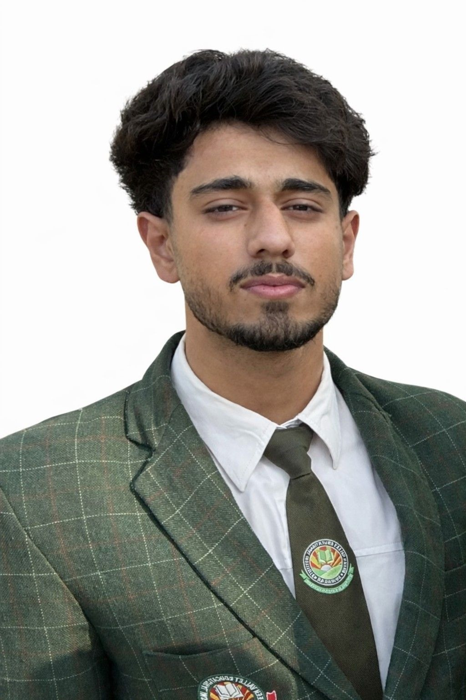

Web Development
Learning to shape ideas into clear, responsive web pages and digital experiences.
Student / Builder / Communicator
Hey, I'm Syed Aga Wahdat Safvi — a student exploring the space where technology, communication, and creativity meet. I enjoy solving problems, learning fast, and turning ideas into practical digital experiences.

01 — A little about me
I'm at the beginning of my academic journey, with a practical mindset and a strong interest in how digital tools can make everyday work easier.
I don't need to know everything today. I need to keep getting better every day.MY APPROACH · CURIOSITY OVER COMFORT
I'm a first-semester student who likes working with people just as much as exploring technology. My interests span customer support, communication, SQL, AI-powered tools, web development, and content for digital platforms.
I value clear communication, reliability, teamwork, and a willingness to learn. My goal is to keep building a versatile skill set, work on meaningful projects, and grow into opportunities where I can contribute and keep improving.
02 — My toolkit
A growing mix of technical, communication, and creative skills — with plenty more to learn.
Learning to shape ideas into clear, responsive web pages and digital experiences.
Exploring how structured information can be organised, queried, and understood.
Using AI tools as learning and productivity aids to brainstorm, research, and work smarter.
Focused on understanding a person's need, responding clearly, and finding helpful next steps.
Interested in sharing ideas clearly, collaborating with others, and building trust.
Interested in digital storytelling, online communities, and engaging content.
03 — The journey
Every project, conversation, and new concept is a chance to turn beginner knowledge into practical ability.
NOW · ACADEMICS
Building a strong foundation, staying curious, and exploring the technology and communication skills that interest me.
IN PROGRESS · TECH
Practising web development fundamentals, exploring SQL, and learning how AI tools can support research and productivity.
NEXT · GOAL
Build more projects, learn from feedback, collaborate with others, and look for opportunities to contribute meaningfully.
04 — What I'm exploring
These are project directions that reflect my current interests. I'll keep adding finished work, demos, and links as they become available.
A responsive personal website that introduces my skills, interests, and learning journey in one place.
A learning track focused on understanding tables, writing queries, and answering simple questions with data.
Experimenting with AI tools for research, organising ideas, drafting content, and improving everyday workflows.
Exploring social content ideas that communicate clearly, catch attention, and encourage meaningful interaction.
Note: Project cards describe current learning directions, not claims of completed client work. Replace or update them as you build more.
05 — Contact
I'm happy to connect about learning, collaboration, technology, content, or opportunities to grow and contribute.